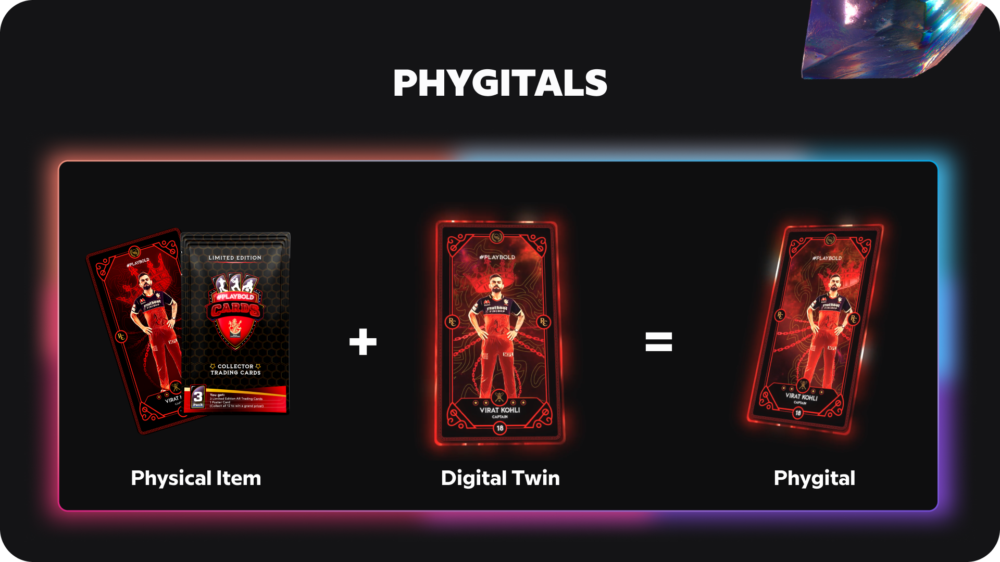
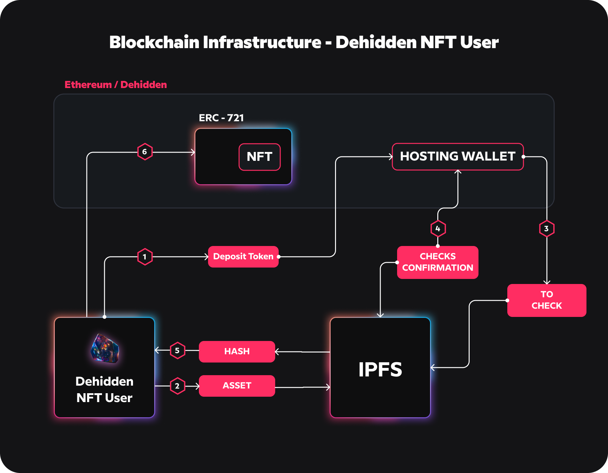
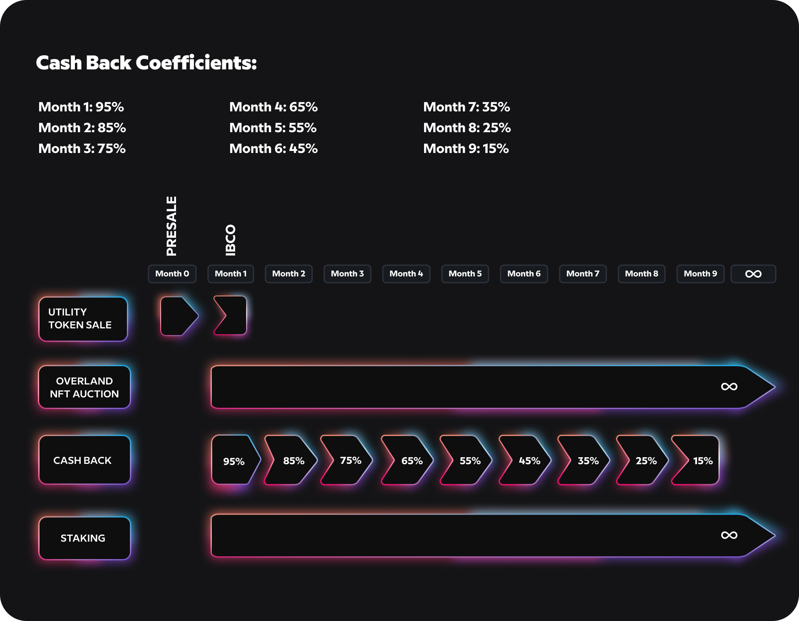

Building Dehidden
Dehidden exists to increase the access, stickiness and immersion of NFTs in the decentralized internet economy

We obsess over 3 problems:
This whitepaper presents how we're looking to solve it:
Building on the Blockchain
At it's simplest form, a blockchain is like a global spreadsheet of transactions. Nobody can edit existing transactions, but anyone can add a new one
Turns out, blockchain is a great tool for verifying the owner of digital things. Which means the whole concept of owning something digitally can exist. Which is crazy and mind bending, but here we are.
We're true believers that digital ownership will have profound impacts on how we use the internet, build communities, and reconcile our value to existing platforms. There's an entire new world of creation, ownership and monetization coming, and it can be truly overwhelming. Dehidden is built to help you experiment with ideas today, and navigate the new world coming.
Blockchain tokens can be sorted into two distinct types of assets: fungible and non-fungible. Fungible tokens are identical and replaceable by another identical token; they are mutually interchangeable. They can represent anything from cryptocurrencies like Bitcoin and coins used in a video game to tokenized versions of real-world assets like crude oil or gold.
Non-fungible tokens (NFTs) are unique, and thus not interchangeable.
A digital art piece that you created, an ownership certificate of a car, or a character in a game are examples of non-fungible assets—they are unique and not directly interchangeable.
In 2017, the NFT industry market cap was measured at just over $30 million. 2018 was notably a down year for the blockchain industry as a whole, but the NFT market cap rose by 480%, weighing in at $180 million. In 2019 the market cap rose again, ending the year at roughly $220 million. NFT transactions tripled in 2020, reaching more than $250 million in total. In just the first two months of 2021, NFT trading volume topped $342 million, surpassing the volume of the entire last year.
NFTs have rapidly gained popularity among companies, artists, celebrities, and influencers as a way to digitize their brands, with early 2021 seeing over 630,000 distinct Ethereum wallets that have created NFTs.
You can sell anything digital using NFT. Virtual Mavs gear, sneakers, art, pictures, videos, experiences, anything our imagination can come up with.— Mark Cuban on NFTs
Blockchain Industry Overview:
Even though the digital asset universe endured a difficult year in 2018, it has since then been on a significant surge. The global blockchain market is forecasted to continuously grow from USD$ 1.2 billion in 2018 to USD$ 23.3 billion by 2023, at a CAGR of 80.2% (this is on track and accelerated as of 2021)
The blockchain ecosystem can be classified into three categories:
Blockchain platforms are core platforms where other things can be built and middleware protocols are blockchain protocols which govern the execution of program code - common transactions required from various applications or enterprises. The two are often referred to as infrastructure protocols in contrast to dApps, which are high-level services operating autonomously with their smart-contract-based systems. DApps are one of the main features of Ethereum along with smart contracts: a combination of different technologies to provide their users specific functionalities.

To allow the new technology of blockchain to be adopted, the first step needed was infrastructure support and now the next step is user engagement. We are of the view that the key to adoption lies in dApps which engage directly with end users. That is why we are presently seeing a huge urge from platform players as well as institutional investors on the scene for killer dApps.
Problem: Access
The internet is a monumental, state-funded invention that omitted the ability to transfer value over a digitally native P2P Value transfer protocol. Information could be transferred cheaply, but not its underlying value. Subsequently, tremendous value accrued to centralized gatekeepers who could throttle bandwidth and impact information flows at will, due to their massive distribution networks and gated privileges. For the past 50 years, our creative class was sacrificed at the altar of efficiency and scale. Media consumption increased but content creators who would not buckle to established orders were told to ‘learn to code’.
And that is exactly what they did.
According to State of the dApps, although there are currently over 2,000 dApps on the market, they only have a daily active use (“DAU”) of 55K, with the most active dApps being decentralized exchanges like IDEX, 0x, and Bancor, followed by game dApps.
Considering token sales and venture capital have raised over USD$38 billion which has been invested in blockchain projects over the past 3.5 years, the real-use adoption in the sector is extremely low - at a higher level, almost nothing has happened yet. Compared to the recently buzzing Pokemon Go case - a single mobile game title, with only a 1.2% of capital input, the startup reported that their monthly active users (“MAU”) broke the 140 million level in 2018: a much higher record than the total digital asset wallet adoptions and the capital investment raised was below the USD$1 billion level.
According to State of the dApps, although there are currently over 2,000 dApps on the market, they only have a daily active use (“DAU”) of 55K, with the most active dApps being decentralized exchanges like IDEX, 0x, and Bancor, followed by game dApps.
Considering token sales and venture capital have raised over USD$38 billion which has been invested in blockchain projects over the past 3.5 years, the real-use adoption in the sector is extremely low - at a higher level, almost nothing has happened yet. Compared to the recently buzzing Pokemon Go case - a single mobile game title, with only a 1.2% of capital input, the startup reported that their monthly active users (“MAU”) broke the 140 million level in 2018: a much higher record than the total digital asset wallet adoptions and the capital investment raised was below the USD$1 billion level.
Furthering this thesis, Dapps would have value realized from Non Fungible Tokens (NFTs) but have faced implementational roadblocks. Buying NFTs should be easy. It's far from it.
Why shouldn’t buying NFTs be as easy as buying a t-shirt or in-game items with your UPI ID? Why shouldn’t selling one as part of a brand be as easy as setting up a Shopify store?
NFTs represent one of the most exciting evolutions of the internet. Over the last several months, millions of consumers have been introduced to NFTs and the entirely new ownership structures they unlock for digital goods. NFTs represent a key building block of the metaverse.
Though the ecosystem has come a long way in a very short time, it still takes a fair amount of work for brands to participate. The list of things for brands to figure out and build is long: building custom storefront experiences and payment mechanisms, helping customers set up various wallets and crypto transfers, handling the web traffic spikes that often follow popular NFT drops
Solution
Dehidden lets creators, brands, and platforms easily create, sell, and purchase NFTs — no crypto deep dive required. How do we do this? For starters, We're building:
Consider how a platform like Shopify has empowered any merchant, be it a small store or a large brand, to easily set up a commerce experience online. Dehidden brings the same leverage to anyone wanting to sell NFTs online. Dehidden also gives these brands and creators the option to sell their NFTs through their own existing channels.
Dehidden's solution revolves around 3 pillars: Phygitals, Intelligence, Immersion
While building the NFT & dApp system around the said functions, we're focusing on:
An NFT is a piece of digital media that can be owned, sold and traded. But that's just scratching the surface – NFTs will be the atomic unit of ownership across metaverses
Make the money you deserve. NFTs provide a historical opportunity for artists to capture the full value of their work.
NFTs can be keys to unlock rare content. Include a Snapchat filter or Roblox skin with your NFT and let users flex in multiple simulations.
For example:
Mint NFTs against your physical drops. Sell pieces that can be worn all the time. IRL and virtual worlds included.
Create custom skins that can be worn across multiple AR apps.
A golden ticket that unlocks early access to merch drops or secret content.
Sell digital art and retain a % of royalties from secondary sales.
Reward your community for being stewards of the Dehidden experience.
Jump in, zero blockchain experience required. The Dehidden Creator platform automates the minting and transferring of your NFTs.
We set you up with a profile to start selling immediately. We're standing at the beginning of something entirely new. Let's explore.
Experiment with selling content on a blockchain – not your checkout. Debit cards and UPI accepted for all NFT purchases.
Let the people flex their NFTs on your block be it Indiranagar, Koramangala or Chennai. Digital goods need to be supported in multiple worlds like yours. This is how the metaverse begins in India.
Content shared in your app isn't confined to the limits of physical space. Enable your users to bring their digitally own goods into your platform.
Every Dehidden user has a secure, OAuth compliant wallet to keep their NFTs safe. Allowing users to easily connect their wallets to your worlds.
Automate distribution and management of NFTs on your platform. Dehidden developer tools were built so platforms like yours can start experimenting with NFTs.
Use Cases IRL
Every NFT minted by Dehidden would be in collaboration with some of the most renowned partners in India. Dehidden would set up the design, implementation and NFT Storefront through this partnership.
After the sale of the NFT, the user gets access to a vibrant dApp ecosystem which unlocks the following use cases:
When building the dApp ecosystem, Dehidden would look to work with the market leaders in respective areas to help catalyse adoption and distribution. Examples below:
 Example: Gaming & sports
Example: Gaming & sports
Gaming dApps as Catalyst for Blockchain Mass Adoption
The global blockchain market is expected to rapidly grow to USD$ 23.3 billion by 2023, even though the digital asset market went through a long winter in 2018 and early 2019. Today, a problem facing the blockchain industry lies in user engagement; that is, it has a desperate need for a successful mass-adoption use case to prove that the blockchain industry can be sustainable and that it can provide an economically healthy token model for the long run. Therefore there is a huge urge from platform players as well as institutional investors and blockchain service players in the value chain, for killer decentalized applications (“dApps”).
Dehidden believes that gaming dApps will act as a catalyst for blockchain mass adoption through its integration of blockchains and the ever-rising PC online/mobile gaming industry. Our team is writing a new playbook for experiences that are immersive and intelligent on blockchain, combining our online/mobile experiences standards with new technical advances.
The benefits of blockchain for games and immersive experiences are clear:
Dehidden would look to prioritise working with some of India's leading gaming, fantasy and broadcast companies to help build strong user incentives to be using it.
Build in collaboration with ecosystem.
Dehidden: from Killer DApp Maker to Blockchain-Powered Entertainment Ecosystem Builder. The next generation blockchain-powered entertainment experience for creators and developers.
The SportsCards market alone is estimated to be worth $5.4bill. Potential = HUGE.
It is our intention to journey step-by-step from a NFT & dApp implementer for Indian IP, to the #1 blockchain entertainment ecosystem builder.
Use Cases IRL
Phygitals are the convergence of the physical and digital world. This means that each physical product comes with a digital identity called a Non-Fungible Token (NFT). NFTs contain unique information that is stored on the blockchain.
Dehidden has built one of the worlds simplest implementation of Tokens tied to physical objects. To claim digital ownership of a phygital, simply scan the Real Items smart label on the product with your phone. Input the one-time pin and gain immediate access to the product’s unique information.
Phygitals are the future of great customer experience. They were mostly used at the height of the pandemic when people had to accomplish usual tasks such as grocery shopping digitally. In a time when people were encouraged to stay at home, phygitals gave customers the best components of digital retail experience like immediacy and immersion. Phygitals provide the perfect combination of security and convenience.
Real Items phygitals are secure because they are backed/secured by blockchain technology. This means that all products have proof of origin and can be traced for authenticity. Phygitals are also convenient because they give consumers direct access to customer service.
For consumers - It's the gateway drug to the metaverse.
It provides a familiar sense of buying 'something' whilst introducing them to a whole new world in NFTs.
Dehidden's Real Items gives consumers access to a phygital’s digital identity or NFT using a smart label. These smart labels are like Serialized QR codes but secured using blockchain technology, making them tamper-proof. Real Items have Dehidden smart labels adhere to industry 4.0 standards. After scanning a label and taking digital ownership of a phygital, the owner will be redirected to the Real Items app; no downloads required.
The Real Items app allows customers to  store, buy, and sell NFTs. For payments, the app lets you connect your bank account or credit card to add cash or ETH  in the wallet section. Lastly, the app includes customer support for direct and accessible communication with Real Items representatives.
If you have a supply chain, a Shopify store, or an original brand, Real Items will allow you to easily create NFTs using the Tokenized Asset Manager (TAM).
TAM’s intuitive and easy-to-use design allows managers and store owners to create smart labels and batches of digital identities for each phygital. TAM enables enterprises to manage real-time inventory distribution and check their products’ global analytics. Additionally, TAM includes a direct line of communication with customers’ data analysis and metrics.
Real items are products with matching digital certificates of authenticity. These records are immutable, non fungible and universally tradeable.
Brands start by creating a digital identity for the products they sell.  Brands can use our Shopify App or our cloud application/API to create digital identities and apply them to packaging or products. Then consumers can scan the 2fa QR code to verify the product authenticity.
For Shopify store owners using the Dehidden Items Shopify App, their users will be sent their NFT directly into their real items account. They can double check the same product arrives when they scan the matching 2fa QR code.
This makes it easy to locate product information at a later date.  If a product is matched to a cause, you will receive follow up information within your portfolio.
A full application suite providing authentication of any type of data or any type of thing.
You don't need a blockchain degree to implement our technology, and your customers don't need one to know their purchases are safe and real.
No tokens, cryptonomics or app to download - Real Items seamlessly mesh offline to online (O2O) retail experiences. Leverage digital assurance for more personalized user experiences.
No need to replace anything: Real Items Tokenized Asset Manager (TAM) integrates with your current stack. Use our GraphQL API or integrate with IFTTT, Zapier, SAP, Salesforce or Hubspot.
a tremendous range of benefits- for your customers...
Showcase your product is real, safe and authentic.
Provide engaging content distributed directly with your products.
Consumer rewards and loyalty programs just got a lot easier to manage.
Direct access to documentation and customer assistance.
Add verification to your supply-chain with a software update, in your existing stores.
Optimize the traffic you have to give consumers an omnichannel retail experience.
Personalize the shopping experience with opt-in content and 3rd party mini apps.
Dehidden envisions a world where every product has a digital identity that gives its own unique experience. We take the best aspects from the physical and digital space to create a more complete and satisfying customer experience.
Intelligence
The NFT revolution today is in its infancy, and represents a global redemption and courageous rebalancing by the creative working class. However, we risk committing an exponentially larger danger of omission, with greater consequences if we neglect a critical and important dimension of NFTs: Programmability, with a specific focus on programmable intelligence  (AI).
Right now creativity in the NFT space is happening only at the object level, and not at the medium level.
NFTs are blockchain-based records that uniquely represent pieces of media. The media can be anything digital, including art, videos, music, gifs, games, text, memes, and code.
While most NFTs have embedded code defining royalty payouts, we have yet to scratch the surface of the programmable NFT design space as part of the NFT medium.
We believe that NFTs will eventually become intelligent NFTs (iNFTs), embedded with interactive, intelligently generative capabilities and capable of sense-making and possibly human-level intelligence in the coming decades.
An iNFT is an intelligent NFT that is embedded with a GPT-3 prompt as part of its immutable smart contract. The iNFT generated is not only perceivably intelligent, but has both interactive and animation capabilities as carefully crafted prompts are stored at the smart contract layer. The hardcoded prompts call upon a state-of-the-art Transformer Language model to facilitate generative possibilities only possible through recent breakthroughs in few-shot and single-shot learning.
intelligent NFT’s essentially improve the value of NFTs 100 fold. They are intelligent, scalable, generative, interactive, and have access to networked intelligence through Dehidden and the ecosystem of dApps that are built on top of it. This moves the ecosystem of NFT into an intelligent non-fungible scarce asset. Traditional Collectibles appeal to our material desires, iNFTs will appeal to the emotional. social and even spiritual desires.
Immersion
Why bet on Immersion?
In 2018 several Augmented Reality technologies were introduced on the market. Technological giants such as Apple, Facebook and Google made major investments and acquisitions increasingly aimed at implementing such technology with contents devoted to consumer market.
According to a recent forecast published by IDC, consumer industry will expand its position as the largest spender in AR and VR closely followed by Retail. This growth is also due to the fact that the smartphone market goes in such a direction that all the devices produced since 2018 fully support Augmented Reality. Also the market related to smart glasses technologies is growing fast and many technological companies are investing to launch a powerful and affordable product on the market. According to IDC, the augmented reality market will reach $11 billion in 2020, while is expected to reach $137 billion by the end of 2024. Research highlights how the investments of the most important technological giants show how these companies have understood the enormous potential of the Augmented Reality, not only as a technology, but as a new and powerful communication channel, able to convey any type of content and usable in any sector. Dehidden uses augmented reality, a technology capable of adding different types of content to the surrounding environment (video, audio, 2D and 3D), creating the illusion that reality and virtuality live together in the same space. All this in real time and from any device with a camera, such as smartphones and smart glasses. This innovation makes it possible to “trace” the elements present in the real world and add other virtual ones. The union between real and digital generates a unique merged experience. The Augmented Reality, in this sense, generates a new dimension, a completely new media space and a rapidly growing market.
Augmented Reality is a technology capable of superimposing various types of contents (video, audio, 2D, 3D) in the surrounding environment. All this happens in real time and from any device equipped with a camera. This innovation actually makes it possible to “track” the elements present in the real scene and virtually add others. The spectacular combination of real and digital generates a unique experience.
For persistent AR, we mean the possibility for a user to relive the same augmented reality experience in time and in the surrounding world. This is possible thanks to a first environmental scan saving. The ability to reload the environment mapping allows a shared experience to be obtained where users see the virtual elements positioned in the same way in the space.
The Metaverse
NFT-based markets for physical real estate, digital art, and Fortnite skins might seem only slightly interconnected, but they are all part of a larger opportunity: the Metaverse. As conceptualized in books and movies beginning in the 1990s, the Metaverse is the virtual alternative to our physical universe and may be the next version of the internet.
It isn’t yet clear if the Metaverse will be one consolidated entity (like the internet) or many separate interwoven ones (like social media companies), but the way it develops will determine its impact on the financial industry. If there are multiple entities, for example, each will have its own rules and may not follow existing risk models.
To envision the potential scale of NFT assets in the Metaverse, imagine a virtual world where every conceivable asset can be bought, sold or traded. Like that world, the Metaverse wouldn’t be constrained by real-world limitations such as raw resource limits, supply chain risk or physics.
And why do we depend on Augmented Reality? AR as an application layer on top of the phygital good that makes the NFT keep unlocking more use cases, content.
One thing is clear: for those who understand and leverage NFTs and other emerging technologies, there are fortunes to be made. But for most, that’s easier said than done. In this piece, we’re going to break down the principles surrounding virtual product marketplaces into the core concepts that businesses should understand to get an early edge in this space.
Today, as I write this, people are building lasting virtual relationships, owning and decorating virtual spaces, and competing for scarce virtual resources across a multitude of distinct virtual ecosystems. And as augmented reality becomes more pervasive, we find virtual overlays playing part in how we view the physical world that, at least so far, we still call the “real” one.
Today’s virtual worlds are mostly constrained to PC and tablet interfaces, and as such, they’re limited by the not-so-immersive capabilities of that hardware–a far-cry from the indistinguishable alternate realities of science fiction. But, as VR hardware becomes more advanced and more affordable, these virtual experiences will become more “real” and the line between our physical world and the virtual worlds we inhabit will begin to blur.
The Shift to the Metaverse
Aside from hardware, the biggest obstacle to the growth of virtual reality is the absence of a coherent cross-world ecosystem. While some virtual worlds strive toward universality, most common virtual environments are intentionally limited to certain games, objectives, or communities.
Eventually, a shared interface will develop to connect virtual spaces with the augmented-reality enhanced physical world. That collective, persistent layer of connected virtual worlds is known as “the metaverse.”
How that evolution will happen is unclear, but experts agree that virtual and augmented reality, the collective metaverses, are already becoming a ubiquitous part of human existence. That’s why smart companies are placing big bets in this space. In fact, 20% of Facebook’s entire workforce is currently invested in developing VR and AR technologies.
But most companies haven’t come close to this level of investment, mostly because they don’t know where to start. This ad/short film from Windows Mixed Reality should help you extend your imagination to the sphere of the metaverse.
A virtual product is an exclusively digital representation of a product. It may be a virtual representation of a real product, or it may be a product that only exists in the virtual realm. While these products may not be “real” in the way we traditionally consider reality to be, they are plenty real enough for real people to be spending real money on them.
For many companies, the applications for virtual products might be obvious. It’s easy to imagine someone buying a virtual high-end Ferrari to get an edge in a virtual racing simulator. Someone wearing an expensive suit in a virtual environment gains a similar benefit to wearing one in real life.
The message is simple. If you make and sell products in the real world, there’s probably a way to make and sell those products in virtual environments. And as we progress toward an immersive multiverse, the value of those products will only increase.
Globally, the video game industry is larger than the sports and film industries combined. Think about that for a second. How badly would you like for your products and/or brand to be featured in a hit movie or on a sports broadcast?
Even if you can’t make a fortune selling virtual products right now, you can immediately begin to leverage massive boosts in brand equity. Whether or not you have a product with a use case that matches one of today’s virtual worlds, you have a brand that can be put on virtual clothing, signage, artwork, and more.Not only are these audiences large, but they’re likely divergent in important ways from your traditional brand audience.
Companies are using NFTs and virtual products to reach younger audiences. Two-thirds of Fortnite players are 24 years old and younger. Roblox’s user base is even younger, with two-thirds of players under 16. Luxury brands in particular find value in allowing virtual users to purchase virtual versions of their expensive products long before they might be able to do so in the “real” world.
Most people’s first question about virtual products is how to maintain a product’s value when they are more easily imitated or counterfeited. Counterfeiting is obviously a problem in most industries in the real world, from sneakers to fine art. In the virtual world it gets even more complicated.In the physical world, the details of materials and construction are what separate a counterfeit Rolex watch from a real one.
In virtual worlds, it’s possible to generate “virtually” identical copies of virtual products with no apparent distinctions in the product files themselves. How do you maintain and enforce scarcity and exclusivity with virtual products? That’s where NFTs come in.The blockchain can seem really complicated at first glance, but the best way to think about it is as a record of ownership for a certain virtual asset, be it a virtual product or a unit of cryptocurrency. The difference between a blockchain and another record of ownership–say, the ledger in your bank account–is that no one owns the blockchain. It’s decentralized and no one has authority to alter, change, or destroy it.
So, if you own one bitcoin, that unit is connected to a record in the blockchain. You can’t spend it twice because an identical record for that coin can’t be created. When you spend that bitcoin or give it to someone else, what you actually give them is the unique reference to its record in the blockchain.NFTs are similar to units of cryptocurrency in that they are generated and protected via blockchain technology. How they differ is that there is no “fungible” or tradeable value assigned to an NFT in itself. One bitcoin is considered to have the same value as every other bitcoin in existence, and as such they can be indexed to a value relative to other currencies or commodities.
An NFT has no value in itself. It’s simply an unalterable and indestructible record of ownership that can point to any virtual asset, from a piece of 3D digital art. An NFT is a secure means of asserting ownership over a virtual asset. If a virtual product is protected via an NFT, the NFT points directly to that product file and not to any other copy or forgery of that product. When you sell an NFT, you are selling proof of ownership of the asset.
How does that keep people from walking around in fake virtual goods in the virtual worlds of tomorrow? The answer? It doesn’t, necessarily. What it does is allow virtual worlds to enforce rules around the use of identifiable products. It allows IP owners to sell and enforce licensed uses of their IP in virtual spaces. And an NFT is just one way to identify and protect virtual ownership, with many others–and likely the eventual standard–still to be developed.
Aside from protecting IP in virtual spaces, NFTs can also be used to protect physical products from counterfeiting and unauthorized reselling. For example, a major problem facing eCommerce companies today is competing against unauthorized resellers of their products on major marketplaces. One way to fight this would be to apply an NFT-linked virtual rendering of your product to authorized sales channels, acting as a verifiable certificate of authenticity.
The Dehidden Sidechain
Sidechains are emerging mechanisms that allow tokens and other digital assets from one blockchain to be securely used in a separate blockchain and then be moved back to the original blockchain if needed. Sidechain functionality holds tremendous potential to enhance the capabilities of existing blockchains.
We selected Ethereum to deploy our decentralised platform because Ethereum already won the race to become the foundation ofWeb 3.0. Ethereum remains the most robust smart contract platform in existence. Of the top 100 tokens by market cap, 96% are built off Ethereum. Of the top 1000 tokens, 89% are built off Ethereum . Ethernode reports over 9,000 active nodes and looking about the community of developers, Truffle, a development environment ad testing framework, is downloaded with an average of 100,000 a month with a 1M of life time downloads since its release in May 2015. However today, Ethereum is limited in terms of throughput (approx. 25tx/s) and gas costs are prohibitive for a high volume of transactions. Due to this scalability and costs limits we decided to integrate in the Dehidden project a sidechain technology bridged to the Ethereum mainnet.
NFTs representing Dehidden Phygitals will be directly minted and exchanged on a sidechain eliminating gas costs. It will always be possible to transfer minted NFTs to the Ethereum mainchain and trade those on marketplaces such as OpenSea, Rarible and Foundation. The security is guaranteed by the Ethereum thanks to bridging smart contracts that permits to securely exchange tokens from the mainnet to the sidechain and vice versa.
Thanks to the sidechain the mobile experience is enhanced removing the friction subject to blockchain and fee mechanics understanding. Dehidden users will have a user experience similar to the web 2.0 in this way improving mass adoption.
@
Dehidden will also release a Public SDK and APIs that:
Dehidden is based on two main protocols, Ethereum and IPFS. While Ethereum is the base layer granting the ownership of the Dehidden Phygital and the circulation of the hard capped Dehidden tokens, IPFS will allow for decentralised storage of the Dehidden dApps and Experiences.
In order to grant AR assets availability, bandwidth and low latency to the final user, Dehidden designed an incentive system for the Dehidden Nodes – IPFS maintainers – and its stakers. Staking will grant a vested interest of the nodes and of the voters on the performance of the network. During the first 3 years from the launch of the platform Dehidden will grant rewards to the Nodes and to the stakers by using a fund that has been reserved from the Hard Cap total emission, no inflation will be created in order to subsidise the Nodes and Voters staking. Subsidy from Dehidden will be gradually replaced by hosting fees distributed to the nodes and to the voters/stakers while the platform is growing
Growth plan
Goals:
The general target audience are adults of different age groups. They include:
A type of user who seizes investment opportunities in the purchase of Dehidden NFTs and identifies a financial return on them. Has a high educational qualification aged 25 and over and their interests are related to investments and the finance of digital markets.
the most heterogeneous target including types of users of different age groups, educational qualifications, geographical origin and interests. The interestsvto be considered for segmentation are augmented reality and passion towards the creators, or IP that they choose to purchase an NFT of.
a specific target with a good chance to buy NFTs, specifically linked to their long term IP, and which see the app as one digital marketing possibility.
specific target with medium-high degree, mainly aged from 25 years over, with interests in the field of digital marketing and advertising. To be taken into consideration as he/she will be able to advise customers to invest in the target company.
a specific target that falls into categories with, probably, a medium to high level of education, with a high percentage from 25 years on, with interest in the field of apps, software, gaming and development. To be considered as a possible content provider for the dapp.
Digital Marketing Strategy Channels
(RACE -Reach, Act, Convert, Engage)
Content Publication and promotion with the aim of attracting users to the Dehidden platform. The communication means will be as follows:
Google ADS
Setting up multilingual campaigns aimed at:
Measurable values: Site visits, app downloads, user interactions with contents.
Listings on specific platforms for advertising on the app and possibility of monetisation such as:
Publication and promotion of content with the aim of informing users that have already shown interest in Dehidden.
Means used will be as follows:
Google ADS
Measurable value: Visits to specific site sections, contact acquisition.
Facebook & Instagram ADS
Setting up multilingual campaigns aimed at:
Measurable values: app download, user interactions with content; contact acquisition.
Advertisement on specific platforms for advertising on apps and possibility of monetisation as:
Publication and promotion of content with the aim of piloting the collected users from the act phase to a conversion.
The means used will be:
Facebook & Instagram ADS
Setting up multilingual campaigns aimed at:
Measurable values: app download, interactions of users with the app.
Publication and promotion of useful contents for people who are already app users such as:
The means used will be:
Setting up multilingual campaigns with the goal:
Measurable values: user interactions with the app.
Advertisement on specific platforms for app advertising and possibility of monetisation as:
Direct Email Marketing Support
Local events
Organisation of local events targeted in major cities aimed at specific segments of identified public. (Roadshow).
Exhibitions
Attendance at the most important technology-related conventions with public events speaking and demonstrations on the stand, setting up purchase and virtual simulations experience.
Media Offline
Press releases to traditional media related to brand and innovation technology. Adhoc press releases related to blockchain
Dehidden aims to leverage a large user base including users of dApps on legacy blockchain platforms like Ethereum, EOS, and partnership-based blockchain, to drive adoption and growth to our ecosystem.
With our dApp first strategy, we expect that killer dApps of Dehidden will drive continuous user engagement item trading and exchanges. We expect this will direct users into the Dehidden marketplace naturally. A newly acquired marketplace of users would form a good foundation for supporting the Dehidden blockchain entertainment ecosystem.
Arguably, current blockchain games and blockchain dApps have failed to attract a large volume of online users due to the complexity of the first activity - here, in the blockchain world, it is the first transaction. For a zero-digital-asset-experienced user, it is hard enough to open a new digital asset wallet and that is just the beginning of all the activities on blockchain dApps. This is why we conduct multiple focus group tests (“FGTs”) and computer based tests (“CBTs”) before launching a dApp.
Through our FGT involving less or non-blockchain-experienced users, we recognize that even MetaMask connection is a challenging step for first-time users. Thus, we will put in place much improved in-ecosystem guides and added more detailed content to help users start the NFT experience with or without MetaMask in India.
As an effort to help Dehidden users create and integrate their newly-created digital asset wallets, our operations team will develop easy video tutorials and in-NFT encouragement for new users to access the dApp ecosystem.
Cashbacks
Cashback Policy: During the first 9 months from the start date of the NFT issuance, Dehidden NFTs will be incentivised by a decreasing cash back policy. For every Dehidden NFT purchase, after a 30 days lockup period, Dehidden tokens will be returned to the buying address with a decreasing ratio. Cash back does not include Gas Fees paid. Cash back will be applied to the first N NFTs sold in that month.
Capital Allocation